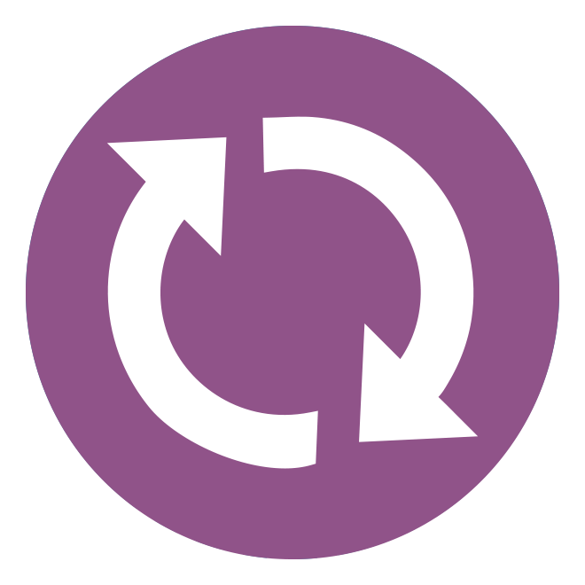

1. Introduction
Why are we here?
ORCID provides an identifier for researchers AND tools (like APIs) to help make connections between researchers, their contributions, and affiliations. Why? To help people find information, and to simplify reporting and analysis.
ORCID wants to help make it possible to do things like:
- Find all of a researcher’s work with a single query
- Auto-populate manuscript submission and grant application forms
- Get (nearly) real-time data about researchers’ publications and grants
- Find the current affiliation(s) of any researcher
ORCID can't do this on its own - integrations with other systems (like manuscript submission/production, funding application, repository, research information, and directory systems) are essential.
This workshop provides an introduction to integrating ORCID into your systems, so that, together, we can /or add affiliations/contributionshelp everyone involved in research spend more time making contributions and less time managing them!
Collect & Connect
A top-notch ORCID integration includes the following capabilities:
Collect authenticated ORCID iDs
Connect Get data from ORCID/add data to ORCID
 Synchronize Get data from ORCID/add data to ORCID on an ongoing basis
 Display iDs you’ve collected in your own system
Display iDs you’ve collected in your own system
Learn more about these integration steps
About the ORCID APIs
ORCID's web interface gives researchers a way to interact with their record, but the real power of ORCID lies in the underlying data, which can be accessed by people and systems via Application Programming Interfaces (APIs).
- Public API: Free to anyone with an ORCID iD
- Member API: Available to ORCID member organizations (Sandbox Member API freely available for testing)
| Features | Public API | Member API |
|---|---|---|
| COLLECT Get authenticated ORCID iDs |
||
| CONNECT Get data from ORCID/add data to ORCID |
Get public data only (can't add data) |
|
| SYNCHRONIZE Get data from ORCID/add data to ORCID on an ongoing basis |
Get public data only (can't add data) |
|
| DISPLAY Show iDs you’ve collected in your own system |
All of the ORCID APIs are based on the same set of technologies:
- REST: ORCID APIs are “RESTful”, which means that they use HTTP (hyper-text transfer) calls to transfer information.
- OAuth: ORCID APIs use the OAuth 2.0 authentication protocol in order to grant client applications access to users’ ORCID records.
- XML/JSON: ORCID APIs support data exchange in either XML or JSON format.
Learn more about the ORCID APIs
Pre-requisites
To complete this tutorial, you'll need the following tools:
- Web browser: Firefox (33+), Chrome (38+), Internet Explorer (10+), Safari (6+)
- Internet connection
- Plain text editor: TextEdit (Mac), Notepad++ (Win), or your preferred plain text editor
- Software capable of making HTTP requests:
- cURL: Free, command-line application available for Mac or Windows at http://curl.haxx.se/download.html (pre-installed on most Mac OS versions; accessible within Terminal application)
- Online tools, like Google OAuth Playground or hurl.it
Examples in this doc use Google OAuth Playground